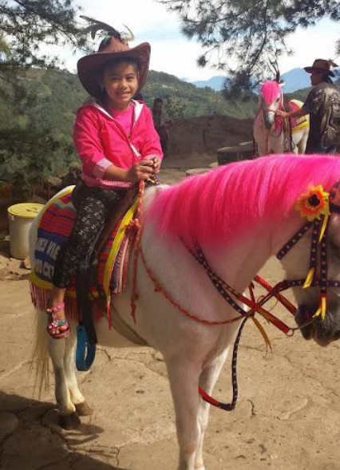

Jessafryne Edrah Tictica
The sister who I don't often get along with.
Here's a timeline and events of Ms. Jessafryne Edrah Tictica:
- 2007 - Born in La Trinidad, Benguet
- 2011 - We weren't the closest of friends back then. We had plenty of typical sibling squabbles and fights, usually over toys or attention. One incident I remember having a Barbie doll. I lost one of the doll's sandals, and...well, let's just say I "borrowed" a shoe from her other Barbie. It became a bit of a legendary fight! I feigned innocence while she cried out in frustration. It was funny.
- 2012 - These early years were filled with fun family trips to Burnham Park in Baguio City. I got a photo of her riding her own kind (Joking)! 
- 2016 - Even though we didn't always see eye-to-eye, (i'm smarter...no? i guess no...) my sibling started to blossom academically. She consistently received awards throughout elementary school, showing her dedication and hard work.
- 2017 - Moved to Nueva Vizcaya for high school.
- 2020 - She was admitted to the hospital during lockdown due to COVID, and thankfully she was able to survive it.
- 2021 - She finished junior high school and got outstanding awards.
- 2022 - She took an ABM course for senior high school. states, "I want to be a pilot, and I've got no choice." (She chose ABM despite her desire to be a pilot).
- 2024 - dies at the age of 17- ooopps!! no just kidding. She's living well and she got a boyfriend (while i don't have one).